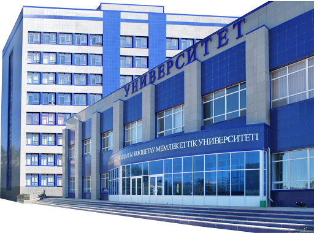

О ЖУРНАЛЕ
The University of British Columbia (UBC) is a global centre for teaching, learning and research, consistently ranked among the top 20 public universities in the world and recently recognized as North America’s most international university.

Since 1915, our motto, Tuum Est (It is Yours), has been a declaration of our commitment to attracting and supporting those who have the drive to shape a better world. As a result, UBC students, faculty and staff continue to embrace innovation and challenge the status quo, placing us at the forefront of discovery, learning and engagement. UBC encourages bold thinking, curiosity and initiative, so you can realize your greatest potential.
The “Karaganda University Bulletin,” an open source scientific periodical, plans to to publish scientific research conducted by Kazakh scientists, as well as those working in other countries, in all fields of science. The journal will be of interest to Kazakhstani and foreign faculty members, as well as doctoral students, undergraduates and students who are interested in the latest results of fundamental and applied research applicable to their academic fields. The journal aims to provide a productive environment for the exchange of relevant scientific and educational information in order to meet the needs of an expanding, integrating international scientific community, while emphasising new methods and progressive ideas.
The purpose of the scientific periodical «Bulletin of Karaganda University — is to publish in open press the results of scientific research of scientists of Kazakhstan and other countries in all branches of science.
The frequency of each series is 1 time per quarter.
Since 1996, the journal began publishing research in two distinct formats; The Humanties Series and The Natural Sciences Series. Later, starting in 2010, the journal began publishig research in nine distinct series. Each of these are included in the KKSON RK list of scientific publications and recommendations for publishing doctoral and candidate dissertations. All the journal series are registered with the ISSN International Center for the Registration of Serial Publications (UNESCO, Paris, France). Together, the journal series serve as a comprehensive periodical, which goes to press four times a year (once per quarter).
Languages of publications: English, Russian, Kazakh
Periodicity: 1 time per quarter.
Significantly, this journal is linked to leading Kazakhstan and foreign library systems and abstract databases. This allows readers immediate and open access to published materials. Since 2015, three journals:
1. The Bulletin of the Karaganda State University - Chemistry
2. The Bulletin of Karaganda State University - Physics
3. The Bulletin of Karaganda State University - Mathematics were included in the Emerging Sources Citation Index (ESCI), a citation database for the Web of Science.